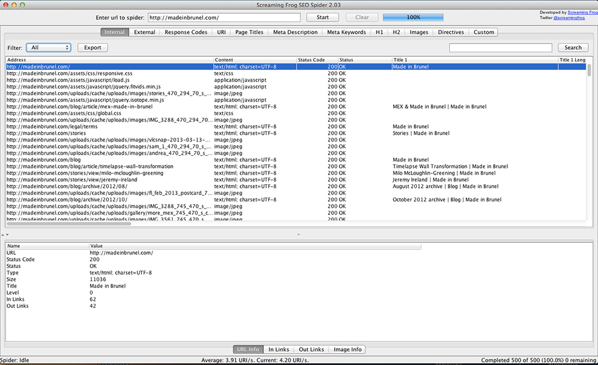

<!-- @include _header -->
<!-- $title Chapter 3: Primary Research -->

<div class="row">
	<div class="w12">
		<header class="section">
			<h1><!-- $title --></h1>
		</header>

		<section class="section" id="competing-solutions">
			<h2>3.1 Competing solutions</h2>
			<p>Various solutions exist for the laborious processes surrounding content strategy but while some partially automate the process they rarely have a focus on content strategy as a primary market. The following table summarises three of the most interesting and prominent competing products found online:</p>
			<figure>
				<table>
					<thead>
						<tr>
							<th>Name</th>
							<th>Price</th>
							<th>Format</th>
							<th>Advantages</th>
							<th>Disadvantages</th>
						</tr>
					</thead>

					<tbody>
						<tr>
							<td>Spreadsheets</td>
							<td>Free</td>
							<td>Desktop app</td>
							<td>
								<ul>
									<li>Flexible</li>
									<li>Data is easily exportable</li>
								</ul>
							</td>
							<td>
								<ul>
									<li>Difficult to manage large amounts of data</li>
									<li>Extremely time-intensive</li>
									<li>Can miss pages</li>
								</ul>
							</td>
						</tr>
						<tr>
							<td><a href="http://www.screamingfrog.co.uk/seo-spider/">Screaming Frog SEO Spider</a></td>
							<td>Free</td>
							<td>Desktop app</td>
							<td>
								<ul>
									<li>Retrieves lots of information</li>
									<li>Data is easily exportable</li>
									<li>Fast</li>
								</ul>
							</td>
							<td>
								<ul>
									<li>Limited to 500 urls per search in free version</li>
									<li>Not focused on content strategy</li>
									<li>Quite clunky because of multi-system issues</li>
								</ul>
							</td>
						</tr>
						<tr>
							<td><a href="http://www.pagetrawler.com/">PageTrawler</a></td>
							<td>Free</td>
							<td>Web app</td>
							<td>
								<ul>
									<li>Quick</li>
									<li>Free (currently)</li>
								</ul>
							</td>
							<td>
								<ul>
									<li>No opportunity to add any additional content to results</li>
									<li>No statistics/useful info generated from results</li>
									<li>Data can't be easily exported</li>
								</ul>
							</td>
						</tr>
					</tbody>
				</table>
				<figcaption>Table 3-1: Current methods of performing a content audit.</figcaption>
			</figure>

			<h3>Spreadsheets</h3>
			<p>The current standard way of performing a content audit is using spreadsheet software like Microsoft Excel. Generally, the structure of each section of a site is found by browsing through the site as a normal visitor would and noting down the URLs. Once the auditor has all of the pages in the spreadsheet in a logical order analytical data can be found using searches on the Google Analytics web application. Results are then copied and pasted into the spreadsheet and notes added. Once the audit is complete a report can be written summarising the results.</p>
			<p>This method has the obvious disadvantage of potentially missing pages as there's no real involvement from the either the Content Management System that's setting the URLs or the search engines that index them. As discussed previously it's also extremely time-intensive because of all the manual copying and pasting involved. More problems appear when the audit takes place over a longer period of time with various different people adding to it as would happen for large sites. The pages on different versions of the document can easily get out of sync and that the analytical data isn't fresh enough to draw helpful conclusions from the results.</p>

			<h3>Screaming Frog SEO Spider</h3>
			<figure class="pull-right">
				
				<figcaption>Figure 3-1: Screaming Frog SEO Spider interface</figcaption>
			</figure>
			<p>Screaming Frog SEO Spider is a desktop application that's aimed at people looking to optimise their site's search engine ranking by editing metadata and fixing HTTP errors. The application focuses on crawling sites to pull back technical information about things like outgoing links, assets and HTTP status codes. If using the application for content auditing the site could be crawled using the application and the list of pages then exported to a spreadsheet to be categorised and commented upon.</p>
			<p>This application's lack of focus on content strategy and it's somewhat clunky interface make it only slightly useful for carrying out the audit process.</p>

			<h3>PageTrawler</h3>
			<p>The final and possibly the most interesting of the three presented above is PageTrawler, a new web application born out of a contest to create something in a week (Gilbertson, S., 2011). At first glance the application seems to have a similar aim to mine with a basis in content auditing. Currently the product is marked as being in alpha and is limited to only 50 URLs per site.</p>
			<p>Unfortunately, at the time of writing the PageTrawler site is unavailable so further testing isn't possible but the existence of another developer who is looking to solve a similar problem once again proves that there's definitely a need for a product in the content auditing field.</p>
		</section>

		<section class="section" id="focus-group">
			<h2>3.2 Focus group</h2>
			<aside class="note pull-right">
				<h2>Ethical approval</h2>
				<p>Completed consent forms for my focus group are available in the appendix.</p>
				<a href="<!-- @path appendix/consent-forms-focusgroup.html -->">Focus group consent forms</a>
			</aside>
			<p>In order to find out more about how elements of content strategy are used within industry I conducted a small focus group with participants from the project management, UX and development sides of the process. I decided that a focus group was the best way to get a general feel for the industry and despite not providing me with any quantitative data it enabled me to use my industry contacts to get time with real web professionals.</p>

			<h3>Aims and questions</h3>
			<p>Before the focus group I gave a lot of thought to the main aims of the session, particularly the information and understanding that I wanted to come out with. I distilled my aims down to these three:</p>
			<ul>
				<li>Find out how web professionals use content strategy in real projects</li>
				<li>Understand the motivation and process involved in a content audit</li>
				<li>See whether there's a market for the application</li>
			</ul>
			<p>I also put together a question list. This allowed me to structure the group in such a way that I didn't lead the participants to a particular outcome while still getting the information outlined in my aims:</p>
			<ol>
				<li>What's the current process for planning a website for a client project?</li>
				<li>Has the recent shift towards mobile and tablet devices changed existing UX strategy processes? If so, how?</li>
				<li>Is there more planning involved? More content strategy?</li>
				<li>Is it difficult to sell these content strategy and UX services to clients?</li>
				<li>What's the best way to measure how effective a piece of content is?</li>
				<li>In what situation(s) do you perform a content audit before building a site?</li>
				<li>What information do you aim to get out of a content audit?</li>
				<li>What tools and processes do you use to carry out content audits?</li>
				<li>Do you show the results of the content audit to clients or just keep it internal?</li>
			</ol>
			
			<h3>Participants</h3>
			<p>I selected three participants to present a balanced view of the website creation process. They are all currently working at Ten4 Design.</p>

			<h4>Liz Walker</h4>
			<p>Liz Walker is a Director and Project Manager at Ten4 Design. Her work varies from day to day but consists mainly of communicating effectively with clients, delegating tasks to members of the team and helping to plan websites using industry standard methods like wireframes and site maps.</p>

			<h4>John Stewart</h4>
			<p>John Stewart is a UI Developer and Project Manager at Ten4 Design. His work is split between project management and developing various sites using Content Management Systems like ExpressionEngine. He also has experience with SaaS (Software as a Service) products having developed one as Product Manager at another company, Quarter.</p>

			<h4>Andy Green</h4>
			<p>Andy Green is a Front-end Developer at Ten4 Design. His work mainly consists of creating websites from mockups and integrating them with various Content Management Systems. He also advises designers on technical limitations during the planning and design phase to ensure development goes as smoothly as possible.</p>
		</section>

		<section class="section" id="findings">
			<h2>3.3 Findings</h2>
			<p>After the focus group I <a href="<!-- @path appendix/focus-group-transcript.html -->">transcribed the recording</a> so I could read through and analyse the comments made by the participants. The key findings are summarised below:</p>
			
			<h3>The emergence of mobile has led to more focus on content</h3>
			<p>The recent trend towards much higher mobile usage and the prevalence of responsive design and development have led to more focus on the content of websites and thus, content strategy. More digital clients are asking about content; how to prepare it for the web, how to reach their customers through social media and how to optimise content for mobile and tablet users. This reveals the increasingly content focused nature of the industry; it's no longer just about making an attractive and functional website, it's about finding good content and making it available across multiple platforms.</p>

			<h3>The current content auditing process takes a long time</h3>
			<p>One specific project mentioned (<a href="http://www.annabelkarmel.com/">Anabel Karmel</a>) was undergoing an audit at the time of the focus group. It's a fairly large site and Ten4 were surprised how long it took to compile the data for each page using Google Analytics and compiling the data into a spreadsheet and report format. Though the value of the audit results wasn't in question it was recognised that audits take a lot of time and it doesn't currently make business sense to audit sites without an upfront fee from the client.</p>

			<h3>The main constraints on content audits are time and budget</h3>
			<p>One of the key things that came out of the focus group was the fact that Ten4 want to do more content audits. At the moment it's difficult for them to justify it because of the time that it takes to complete one to a good standard. If the time that it takes to create a content audit were to decrease then smaller sites could be audited as part of the normal UX strategy process. This attitude towards content auditing shows a clear need for my application in industry.</p>

			<h3>Reporting is all about informing the client</h3>
			<p>Proposals and site reports that sent to clients are all about informing and persuading the client of a specific goal. There's a lot of 'client education' in the digital industry because of the increasing complexity of online projects and a big part of the project management effort is ensuring that the client understands the decisions that are made and crucially, are informed of the data that is used to back up the claims. Content auditing can provide the data for these reports.</p>

			<h3>Application end point</h3>
			<p>The focus group highlighted the lack of a defined end point for my application - potential users understood the usefulness of the information they could gain but didn't really see a way to export the data or fit it into their workflow. As workflow is so key to web professionals and the application is so focused around making the audit process as simple and efficient as possible it was important to explore the various options available to be used as the application's end point.</p>
			<p>Sitemaps were a strong contender at first as they strongly support the re-design side of the content audit. A user could audit a site, select pages from the current site and drag them onto a canvas to organise and arrange them in a more logical manner. Despite positive feedback about this ides it seemed quite strange from a workflow point of view to start a re-design by using very specific information about the old site rather than a blank slate. Often the biggest changes during a website redesign are to the structure.</p>
			<p>The end point that made the most sense was an outline report format that would highlight well and poorly performing content across a site. The core of the idea is that a web professional would run the audit and categorise each page's content into one of the ROT (Redundant, Out-of-date, Trivial) groups or mark it as valuable content. Comments about specific content could then be added and a report printed to present to the client as a guide to help them review their online content. The great thing about this solution is that the data can be used alone for the purposes of content clean-up and optimisation or attached to the back of a project proposal to provide backup data for a site redesign or copyrighting services.</p>
			<p>This idea was presented to Ten4 and received positive feedback because of its flexibility and friendliness to existing workflow practices. The key would be to ensure that the reports contained enough data to stand alone but not so much that it would be attempting to supersede existing processes for project proposals.</p>
		</section>
		
		<a class="next-part" href="<!-- @path design.html -->">Chapter 4: Design</a>
	</div>
</div>

<!-- @include _footer -->